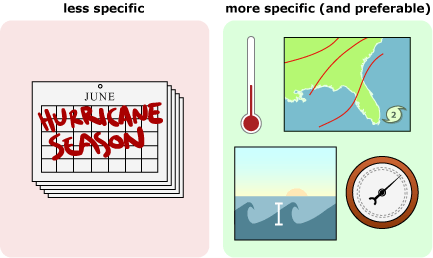
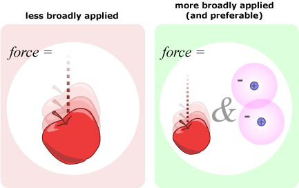
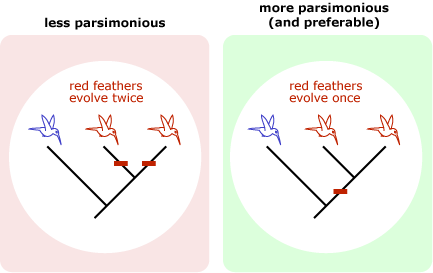
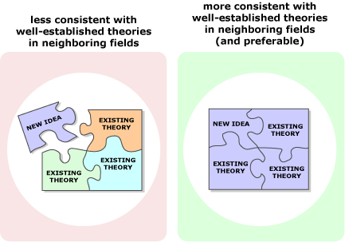
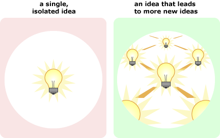

In evaluating scientific ideas, evidence is the main arbiter; however, sometimes the available evidence supports several different hypotheses or theories equally well. In those cases, science often applies other criteria to evaluate the explanations. Though these are more like rules of thumb than firm standards, scientists are more likely to put their trust in ideas that:
- generate more specific expectations (i.e., are more testable). For example, a hypothesis about hurricane formation that generates more specific expectations about the conditions under which they are likely to form might be preferred over one that just suggests what time of year they should be common. 
- can be more broadly applied. For example, a theory about the nature of force that applies to both macroscopic interactions (e.g., the pull of Earth's gravity on an apple) and subatomic interactions (e.g., between protons and electrons) might be preferred over one that only applies to interactions between large objects. 
- are more parsimonious. For example, a hypothesis about the evolutionary relationships among hummingbird species that involves only 70 evolutionary changes might be preferred over one that postulates 200 changes. 
THE PRINCIPLE OF PARSIMONY
The principle of parsimony suggests that when two explanations fit the observations equally well, a simpler explanation should be preferred over a more convoluted and complex explanation. For a hypothetical illustration, imagine that we have only a few lines of evidence in a case of cookie jar pilfering: a broken and empty cookie jar, a crumb trail leading to the doggie door, and Fido's bellyache. Perhaps Fido stole the cookies, or perhaps it was all a set-up: the parrot knocked the jar off the table and ate the cookies, the cat tracked the crumbs to the door, and Fido has a bellyache because he got into the neighbor's garbage can. Both explanations fit all the available evidence - but which is more parsimonious?
To learn more about how parsimony is balanced with other considerations when evaluating evidence, explore our case study on animal color vision.- are more consistent with well-established theories in neighboring fields. For example, a major argument against the theory of evolution when Darwin first proposed it was that the theory didn't mesh with what was known about the age of the Earth at the time. Physicists had estimated the Earth to be just 100 million years old, a length of time that was deemed insufficient for evolution to account for the diversity of life on Earth today. However, as our understanding of geology and physics have improved, the age of the Earth has been more accurately pegged at several billion years old — a view that squares well with the idea that all life on Earth evolved from a common ancestor. 
- generate more new ideas. For example, evolutionary biology not only helps us understand the history of life on Earth, but also generates useful ideas that can be applied to many fields — most notably in medicine, agriculture, and conservation. The power of evolution to generate fruitful ideas in many other fields reinforces its value as a theory. 
All this might seem complex, but it's important to keep the main point in mind. These criteria are just guidelines for identifying ideas that work — ideas that fit the evidence, generate new expectations, inspire further research, and seem to be accurate explanations for how the world works!